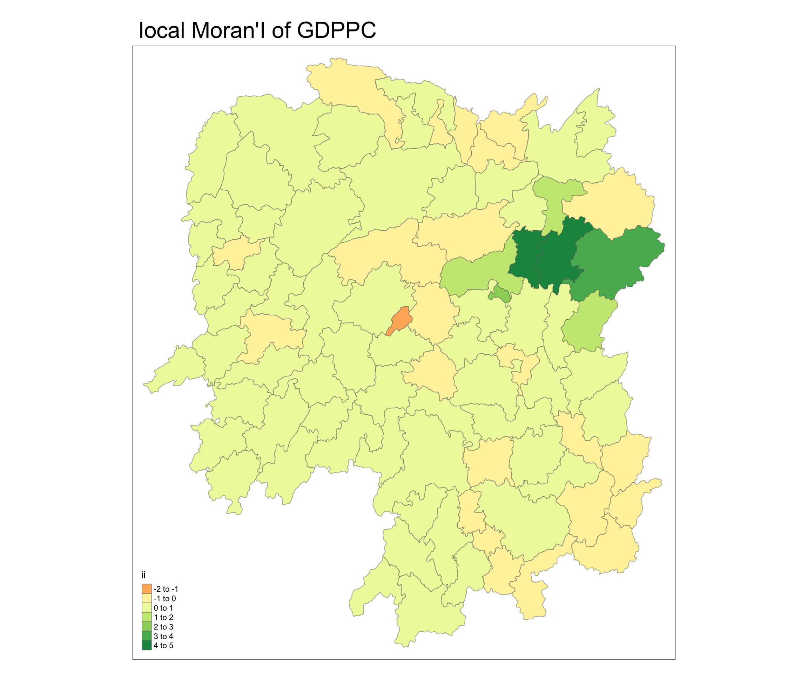
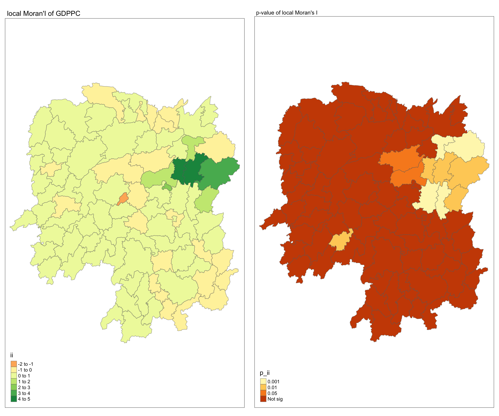
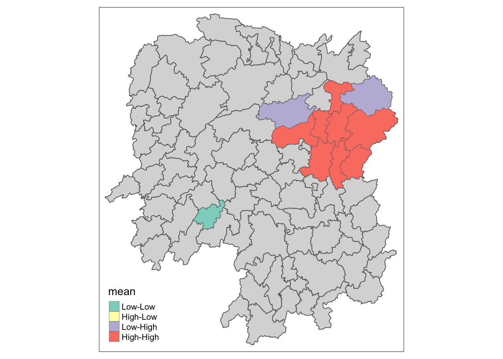
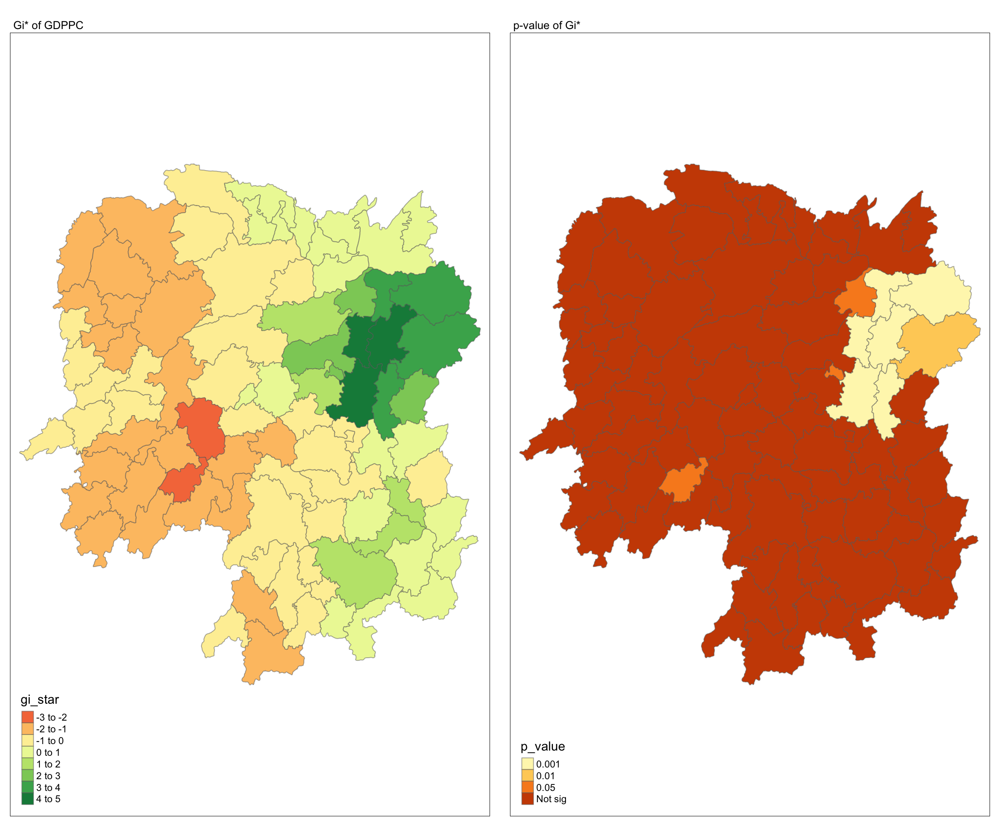
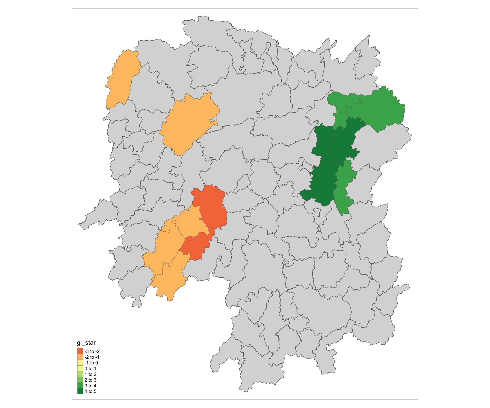

pacman::p_load(sf, sfdep, tmap, tidyverse)In-class Exercise 06: Global/Local Measures of Spatial Autocorrelation
In Class Notes
Instead of interested in whether the distribution are normally distributed, but rather focus more on whether the data set are randomly distributed.
- If we can reject that the data set is not randomly distributed, then we can infer whether it is clustered or dispersed.
How to identify outlier?
- E.g. if the neighbours are all with high GDPPC, then most likely it will be the outlier. However, we need to perform statistical analysis to confirm it. => using LMSA
Need to be able to reject the null hypothesis(it is not randomly distributed), then we can infer whether there is spatial autocorrelation. (Use term such as weak/strong spatial autocorrelation)
Positive Spatial autocorrelation => clustering and little or no outliers.
Negative Spatial autocorrelation => means there will be more outliers.
GMSA:
Moran’I => Make use of mean(itself and it’s neighbours) to calculate the I value. To check how differ in the study area as a whole.
Geary C => compare itself and it’s neighbours. To check the difference from immediate neighbours.
The lowest value will be 0, but the highest value can be inf.
Would not be smaller than 0.
LMSA:
Getis-Ord Gi/Gi* => must use distance matrix and all positive value.
Use to identify clusters.
G* => consider itself.
G => do not consider itself.
Note: not to identify outliers, but clusters.
LISA => to identify clusters or outliers.
Clusters:
HH => High value area ,surrounded by high value neighbours
LL => Low value area, surrounded by low value neighbours.
Outliers:
HL => High value area ,surrounded by low value neighbours
LH => Low value area, surrounded by high value neighbours.
Tips on choosing color for the plot.
If there are positive and negative value => choose the diverging color scheme.
For nominal data => try use distinct color.
1. Getting Started
To load the R packages.
sf is use for importing and handling geospatial data in R,
tidyverse is mainly use for wrangling attribute data in R,
sfped, builds on the great shoulders of spdep package for spatial dependence. sfdep creates an sf and tidyverse friendly interface
tmap will be used to prepare cartographic quality chropleth map.
1.1 Import the data
Hunan province administrative boundary layer at county level. This is a geospatial data set in ESRI shapefile format.
Hunan_2012.csv: This csv file contains selected Hunan’s local development indicators in 2012.
hunan_sf <- st_read(dsn = "data/geospatial",
layer = "Hunan")Reading layer `Hunan' from data source
`/Users/mingwei/Desktop/SMU/Y3S1/IS415/xXxPMWxXx/IS415-GAA/In-class_Ex/In-class_Ex06/data/geospatial'
using driver `ESRI Shapefile'
Simple feature collection with 88 features and 7 fields
Geometry type: POLYGON
Dimension: XY
Bounding box: xmin: 108.7831 ymin: 24.6342 xmax: 114.2544 ymax: 30.12812
Geodetic CRS: WGS 84Using read_csv function from tidyverse package.
hunan2012 <- read_csv("data/aspatial/Hunan_2012.csv")Using left_join() of dplyr package to update the attribute table of hunan_sf with the attribute fields of hunan2012 dataframe.
hunan_sf_GDPPC <- left_join(hunan_sf,hunan2012) %>%
dplyr::select(1:4, 7, 15)2. Global Measures of Spatial Autocorrelation
2.1 Deriving Queen’s contiguity weight: sfdep methods
wm_q <- hunan_sf_GDPPC %>%
mutate(nb = st_contiguity(geometry),
wt = st_weights(nb,
style = "W"),
.before = 1) # the new column will be add to the front.2.2 Computing Global Moran’I
moranI <- global_moran(wm_q$GDPPC,
wm_q$nb,
wm_q$wt)
glimpse(moranI)List of 2
$ I: num 0.301
$ K: num 7.64k => the average neighbour in the data.
2.3 Performing Global Moran’s I Test
global_moran_test(wm_q$GDPPC,
wm_q$nb,
wm_q$wt)
Moran I test under randomisation
data: x
weights: listw
Moran I statistic standard deviate = 4.7351, p-value = 1.095e-06
alternative hypothesis: greater
sample estimates:
Moran I statistic Expectation Variance
0.300749970 -0.011494253 0.004348351
Note
p-value = 1.095e-06(< 0.05), indicate that the null hypothesis can be rejected.
I = 0.3007, indicates weak positive spatial autocorrelation, meaning that areas with similar values of GDPPC are geographically clustered together.
2.4 Performing Global Moran’I permutation test
In practice, Monte carlo simulation should be used to perform the statistical test. For sfdep, it is supported by global_moran_perm().
To ensure that the computation is reproducible. Make use of set.seed() before perform permutation.
set.seed(1234)global_moran_perm(wm_q$GDPPC,
wm_q$nb,
wm_q$wt,
nsim = 99)
Monte-Carlo simulation of Moran I
data: x
weights: listw
number of simulations + 1: 100
statistic = 0.30075, observed rank = 100, p-value < 2.2e-16
alternative hypothesis: two.sided
Note
- Notice that the I value is still around 0.3.
3. Computing local Moran’I
lisa <- wm_q %>%
mutate(local_moran = local_moran(
GDPPC, nb, wt, nsim = 99),
.before = 1) %>%
unnest(local_moran) # to expand the local_moran column.
Note
Notice there are 3 p-value fields(p_ii, p_ii_sim, p_folded_sim) => be consistent , using one of the field to do analysis.
There are also 3 clusters field(mean, median, pysal)
median => useful when there is skew (check skewness field, close to 0).
mean => if the data follow standard distribution.
3.1 Visualising local Moran’I
tmap_mode("plot")
tm_shape(lisa) +
tm_fill("ii") +
tm_borders(alpha = 0.5) +
tm_view(set.zoom.limits = c(6,8)) +
tm_layout(
main.title = "local Moran'I of GDPPC",
main.title.size = 2
)
3.2 Visalising local Moran’s I and p-value
tmap_mode("plot")
map1 <- tm_shape(lisa) +
tm_fill("ii") +
tm_borders(alpha = 0.5) +
tm_view(set.zoom.limits = c(6,8)) +
tm_layout(
main.title = "local Moran'I of GDPPC",
main.title.size = 1
)
map2 <- tm_shape(lisa) +
tm_fill("p_ii", breaks = c(0, 0.001, 0.01, 0.05, 1),
labels = c("0.001", "0.01", "0.05", "Not sig")) +
tm_borders(alpha = 0.5) +
tm_layout(
main.title = "p-value of local Moran's I",
main.title.size = 0.8
)
tmap_arrange(map1,
map2,
ncol=2)
3.3 Visualising LISA map
In lisa, there are 3 fields contain the LISA categories. They are mean, median and pysal. In general , classification in mean will be used.
lisa_sig <- lisa %>%
filter(p_ii < 0.05)
tmap_mode("plot")
tm_shape(lisa) +
tm_polygons() +
tm_borders(alpha = 0.5) +
tm_shape(lisa_sig) +
tm_fill("mean") +
tm_borders(alpha = 0.4)
4. Computing local Gi* statistics
wm_idw <- hunan_sf_GDPPC %>%
mutate(nb = st_contiguity(geometry),
wts = st_inverse_distance(nb, geometry,
scale = 1,
alpha = 1),
.before = 1)To compute local Gi*.
HCSA <- wm_idw %>%
mutate(local_Gi = local_gstar_perm(
GDPPC, nb, wt, nsim = 99),
.before = 1) %>%
unnest(local_Gi)
HCSASimple feature collection with 88 features and 18 fields
Geometry type: POLYGON
Dimension: XY
Bounding box: xmin: 108.7831 ymin: 24.6342 xmax: 114.2544 ymax: 30.12812
Geodetic CRS: WGS 84
# A tibble: 88 × 19
gi_star cluster e_gi var_gi std_dev p_value p_sim p_folded_sim skewness
<dbl> <fct> <dbl> <dbl> <dbl> <dbl> <dbl> <dbl> <dbl>
1 0.0416 Low 0.0114 0.00000641 0.0493 9.61e-1 0.7 0.35 0.875
2 -0.333 Low 0.0106 0.00000384 -0.0941 9.25e-1 1 0.5 0.661
3 0.281 High 0.0126 0.00000751 -0.151 8.80e-1 0.9 0.45 0.640
4 0.411 High 0.0118 0.00000922 0.264 7.92e-1 0.6 0.3 0.853
5 0.387 High 0.0115 0.00000956 0.339 7.34e-1 0.62 0.31 1.07
6 -0.368 High 0.0118 0.00000591 -0.583 5.60e-1 0.72 0.36 0.594
7 3.56 High 0.0151 0.00000731 2.61 9.01e-3 0.06 0.03 1.09
8 2.52 High 0.0136 0.00000614 1.49 1.35e-1 0.2 0.1 1.12
9 4.56 High 0.0144 0.00000584 3.53 4.17e-4 0.04 0.02 1.23
10 1.16 Low 0.0104 0.00000370 1.82 6.86e-2 0.12 0.06 0.416
# ℹ 78 more rows
# ℹ 10 more variables: kurtosis <dbl>, nb <nb>, wts <list>, NAME_2 <chr>,
# ID_3 <int>, NAME_3 <chr>, ENGTYPE_3 <chr>, County <chr>, GDPPC <dbl>,
# geometry <POLYGON [°]>
Note
- For HCSA, using the term hot spot and cold spot. Unlike LISA which will using clustering or outliers.
4.1 Visalising local Gi* and p-value
tmap_mode("plot")
map1 <- tm_shape(HCSA) +
tm_fill("gi_star") +
tm_borders(alpha = 0.5) +
tm_view(set.zoom.limits = c(6,8)) +
tm_layout(main.title = "Gi* of GDPPC",
main.title.size = 0.8)
map2 <- tm_shape(HCSA) +
tm_fill("p_value",
breaks = c(0, 0.001, 0.01, 0.05, 1),
labels = c("0.001", "0.01", "0.05", "Not sig")) +
tm_borders(alpha = 0.5) +
tm_layout(main.title = "p-value of Gi*",
main.title.size = 0.8)
tmap_arrange(map1, map2, ncol = 2)
4.1 Visualising hot spot and cold spot area
HCSA_sig <- HCSA %>%
filter(p_sim < 0.05)
tmap_mode("plot")
tm_shape(HCSA) +
tm_polygons() +
tm_borders(alpha = 0.5) +
tm_shape(HCSA_sig) +
tm_fill("gi_star") +
tm_borders(alpha = 0.4)